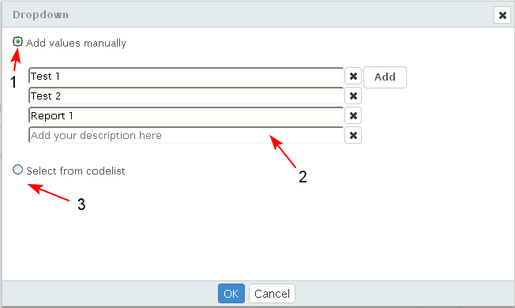
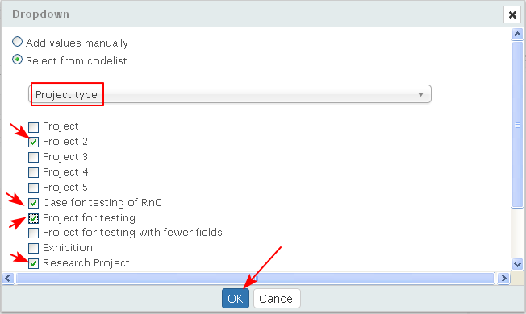
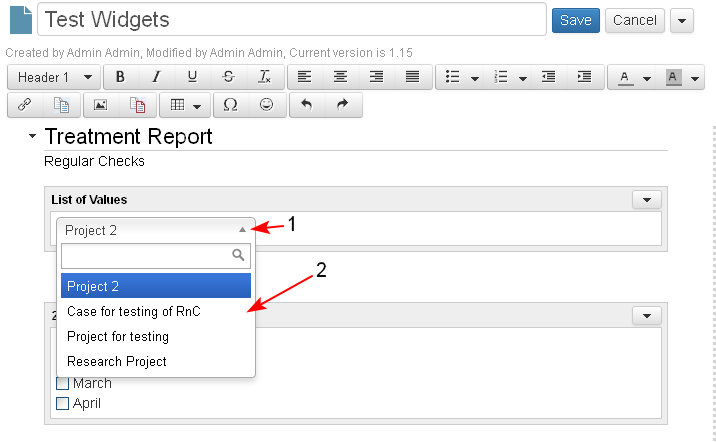

The user is able to insert a drop down list in an iDoc.
- The user selects the Dropdown widget from the widget palette (1), drags it and drops it in a section in the iDoc (2).
- The user adds a title (3) and manages the properties of the widget (4-5).

The user defines the values that will appear in list.
The values may be added manually in a list (1-2). If the user wants to select values from code lists, he/she selects the radio button "Select from codelist" (3).

- The user selects values from the existing code lists (vocabularies) in the system (1).
The drop-down list provides the user autosuggestion of values. When the user starts typing something (2) then in the text field below are displayed only values which match the entered letters.
The user selects a value (3) -for example "Project type". The selected value is inserted (4).

- The user defines if all or some of its values will be listed in the drop down list. When ready the user clicks "OK".

The system displays the document in edit mode. The drop down list box (1) is enabled only when an iDoc is opened in Edit mode.The user is able to select which value should be used in the widget from the values specified before (2).
When the user is ready with the settings, he/she saves the document.

- The document is displayed in preview mode.